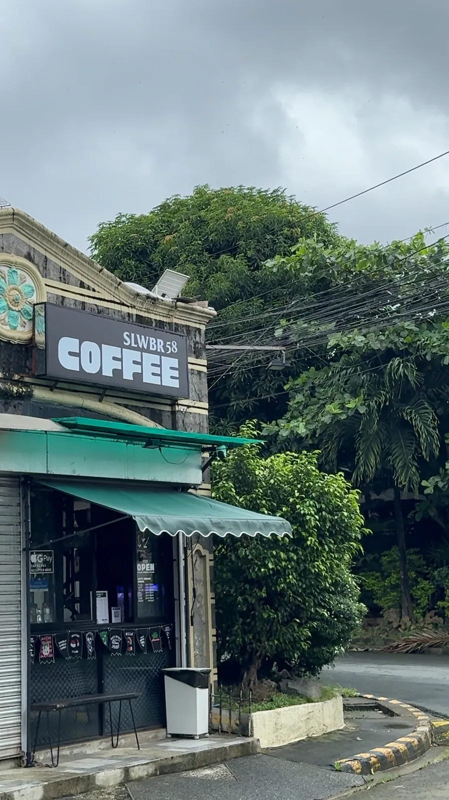

Coffee Near Brookside Hills, Greenland, Midtown & Cainta Junction
SLWBR58 Cafe is at 2080 Camden Ave. cor. Saint Jude, Area 12, Brookside Hills Subd., Cainta, Rizal. Here is how to find us.

Finding SLWBR58 in Brookside Hills
Look for the dark SLWBR58 Coffee signboard above a green awning on the corner of Camden Ave. and Saint Jude, with a walk-up counter and an "Open" sign facing the street. Tuesday to Thursday 1:00 PM to 8:00 PM, Friday to Sunday 1:00 PM to 9:00 PM, closed Mondays.
Nearby areas
- Brookside Hills: our home base
- Greenland, Midtown, Parola and Vista Verde
- Greenpark and Cainta Junction
Use the map below or open it in Google Maps for live directions.
Can't come by?
Order on Facebook or Instagram. Pickup is preferred; delivery covers walking or biking distance from the cafe.
Frequently asked questions
Is there a coffee shop in Brookside Hills, Cainta?
Yes. SLWBR58 Cafe is at 2080 Camden Ave. cor. Saint Jude, Area 12, Brookside Hills Subd., Cainta, Rizal.
Does SLWBR58 deliver?
Yes, within walking or biking distance of the cafe, free on a minimum of 2 orders. Pickup is preferred. Message us on Facebook or Instagram to order.
How do I find the shop?
Look for the SLWBR58 Coffee signboard and green awning.